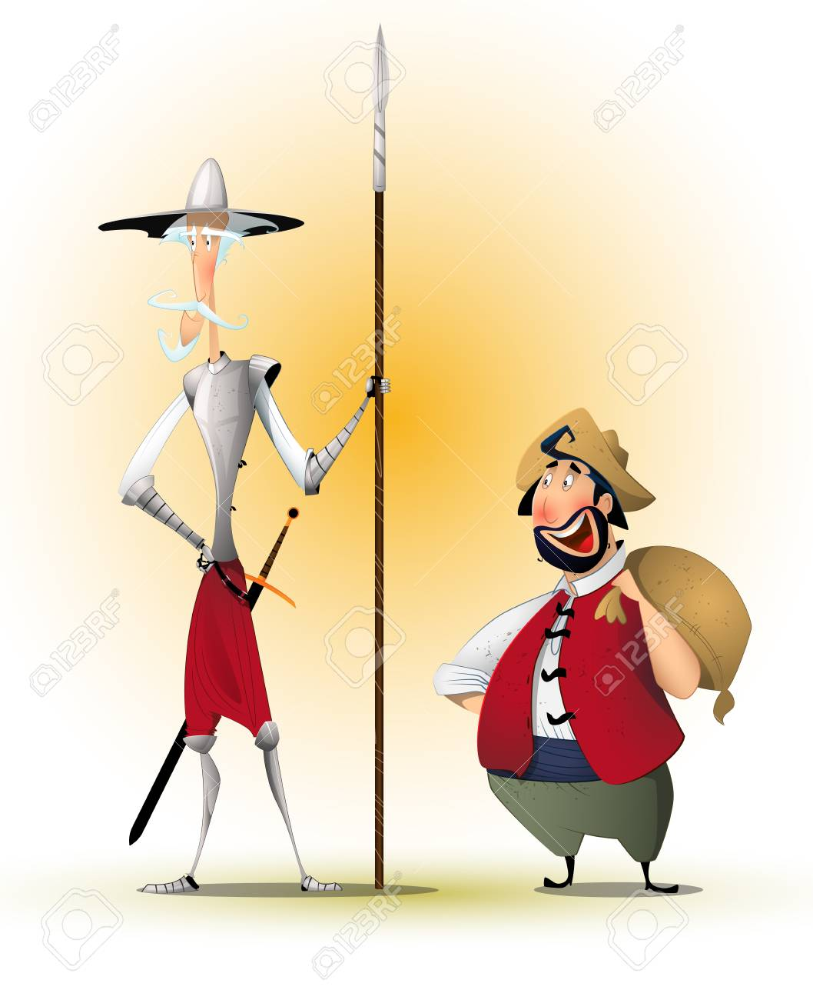
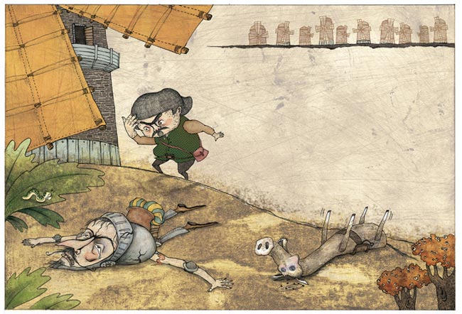
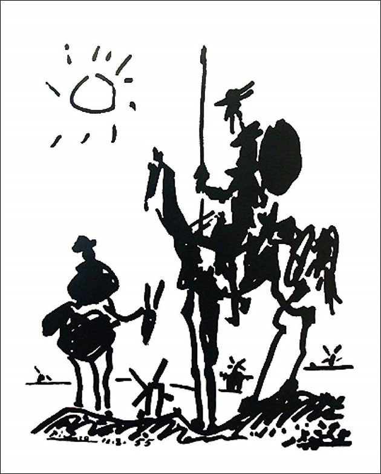
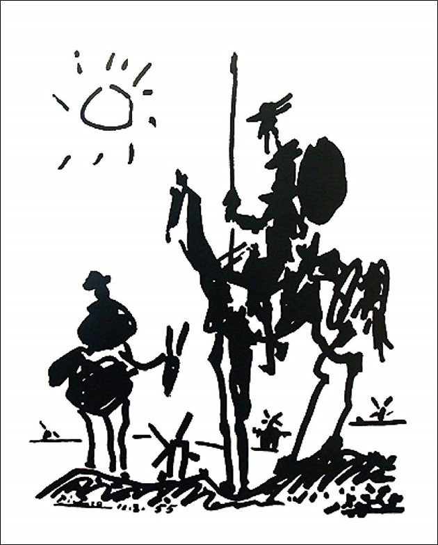
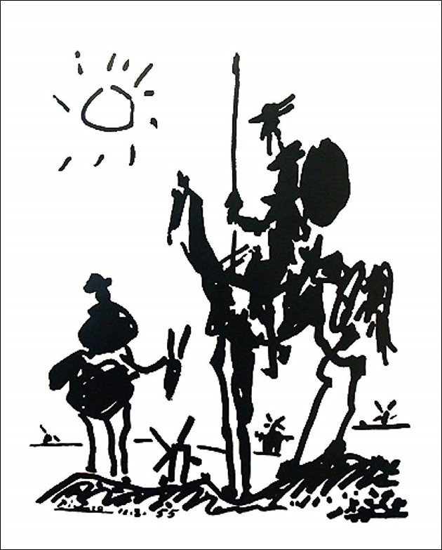

The Windmill Incident

This modern interpretation captures Don Quixote’s dramatic encounter with the windmills — a satirical reminder of idealism clashing with reality.
Silhouetted Legacy

An abstract representation, reminiscent of Picasso's tribute, symbolizing the eternal spirit of Quixote and Sancho Panza wandering the La Mancha plains.
Illustration Gallery


 


Explore different artistic interpretations of Cervantes’ legendary knight-errant and his faithful squire.
Contact
For illustration submissions, collaborations, or inquiries, please email: hello@donquixoteart.com